George Washington
The basis of our political systems is the right of the people to make and to alter their
constitutions of government.
John Adams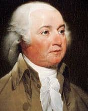
Liberty, according to my metaphysics is a self-determining power in an intellectual agent. It
implies thought and choice and power.
Thomas Jefferson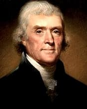
…some honest men fear that a republican government can not be strong, that this Government is not
strong enough;
James Madison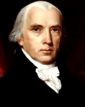
If men were angels, no government would be necessary. If angels were to govern men, neither external
nor internal controls on government would be…
James Monroe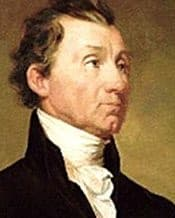
To what, then, do we owe these blessings? It is known to all that we derive them from the excellence
of our institutions.
John Quincy Adams
Union, justice, tranquillity, the common defense, the general welfare, and the blessings of
liberty—all have been promoted by the Government under…
Andrew Jackson
But you must remember, my fellow-citizens, eternal vigilance by the people is the price of liberty,
and that you must pay the price if you wish to…
Martin Van Buren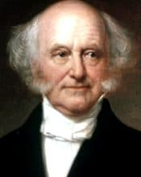
...in all the attributes of a great, happy, and flourishing people we stand without a parallel in
the world.
William Henry Harrison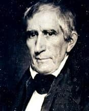
I too well understand the dangerous temptations to which I shall be exposed from the magnitude of
the power which it has been the pleasure of the…
John Tyler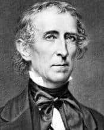
Wealth can only be accumulated by the earnings of industry and the savings of frugality...
James K. Polk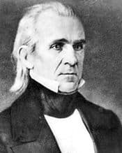
Mexico has passed the boundary of the United States, has invaded our territory and shed American
blood upon the American soil.
Zachary Taylor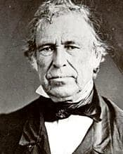
...I shall make honesty, capacity, and fidelity indispensable prerequisites to the bestowal of
office...
Millard Fillmore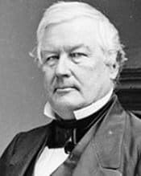
The great law of morality ought to have a national as well as a personal and individual application.
Franklin Pierce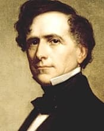
The storm of frenzy and faction must inevitably dash itself in vain against the unshaken rock of the
Constitution.
James Buchanan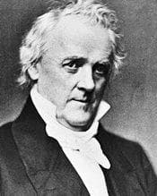
Next in importance to the maintenance of the Constitution and the Union is the duty of preserving
the Government free from the taint or even the…
Abraham Lincoln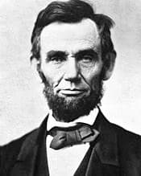
With malice toward none, with charity for all, with firmness in the right as God gives us to see the
right, let us strive on to finish the work we…
Andrew Johnson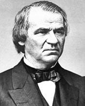
Legislation can neither be wise nor just which seeks the welfare of a single interest at the expense
and to the injury of many...
Ulysses S. Grant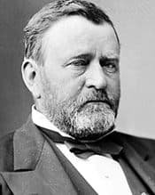
It was my fortune, or misfortune, to be called to the office of Chief Executive without any previous
political training.
Rutherford B. Hayes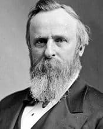
It is the desire of the good people of the whole country that sectionalism as a factor in our
politics should disappear.
James Garfield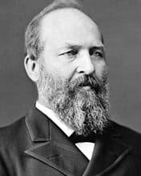
There can be no permanent disfranchised peasantry in the United States.
Chester A. Arthur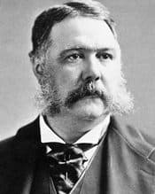
Experience has shown that the trade of the East is the key to national wealth and influence.
Grover Cleveland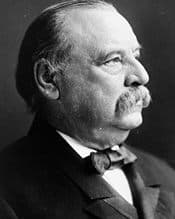
It is a plain dictate of honesty and good government that public expenditures should be limited by
public necessity...
Benjamin Harrison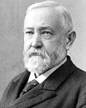
...opportunities offered to the individual to secure the comforts of life are better than are found
elsewhere and largely better than they were here…
William McKinley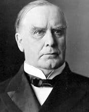
War should never be entered upon until every agency of peace has failed; peace is preferable to war
in almost every contingency.
Theodore Roosevelt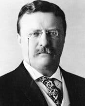
...legislation will generally be both unwise and ineffective unless undertaken after calm inquiry
and with sober self-restraint.
William Howard Taft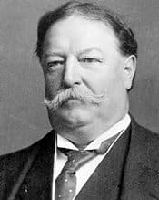
Our international policy is always to promote peace.
Woodrow Wilson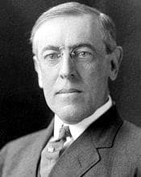
The world must be made safe for democracy. Its peace must be planted upon the tested foundations of
political liberty.
Warren G. Harding
Our most dangerous tendency is to expect too much of government, and at the same time do for it too
little.
Calvin Coolidge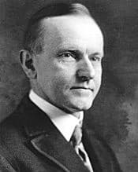
The fundamental precept of liberty is toleration.
Herbert Hoover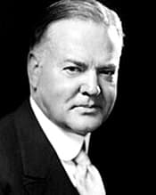
In the soil poisoned by speculation grew those ugly weeds of waste, exploitation, and abuse
of financial power.
Franklin D. Roosevelt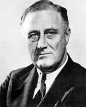
And the love of freedom is still fierce and steady in the nation today.
Harry S. Truman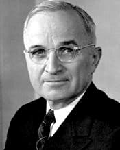
No government is perfect. One of the chief virtues of a democracy, however, is that its
defects are always visible...
Dwight D. Eisenhower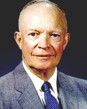
A people that values its privileges above its principles soon loses both
John F. Kennedy
Let the word go forth from this time and place, to friend and foe alike, that the torch has
been passed to a new generation of Americans...
Lyndon B. Johnson
We believe that all men have certain unalienable rights. Yet many Americans do not enjoy
those rights.
Richard M. Nixon
In any organization, the man at the top must bear the responsibility. That responsibility,
therefore, belongs here, in this office. I accept it.
Gerald R. Ford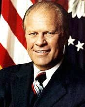
We are bound together by the most powerful of all ties, our fervent love for freedom and
independence, which knows no homeland but the human heart.
James Carter
We simply must have faith in each other, faith in our ability to govern ourselves, and faith
in the future of this Nation.
Ronald Reagan
…let us begin an era of national renewal. Let us renew our determination, our courage, and
our strength. And let us renew our faith and our hope.…
George H. W. Bush
We are approaching the conclusion of an historic postwar struggle between two visions: one
of tyranny and conflict and one of democracy and freedom.
William J. Clinton
Our democracy must be not only the envy of the world but the engine of our own renewal.
George W. Bush
Today, we affirm a new commitment to live out our nation's promise through civility,
courage, compassion and character.
Barack Obama
Change will not come if we wait for some other person or some other time. We are the ones
we've been waiting for. We are the change that we seek.
Donald J. Trump
...we all bleed the same red blood of patriots, we all enjoy the same glorious freedoms, and
we all salute the same great American Flag.
Joseph R. Biden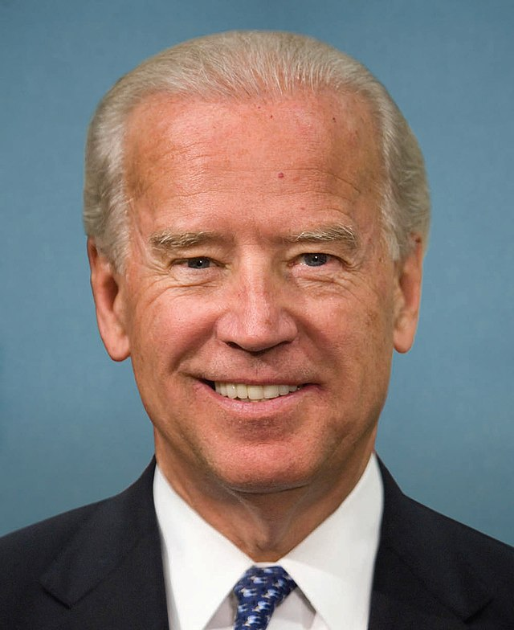
Failure at some point in your life is inevitable, but giving up is unforgivable.